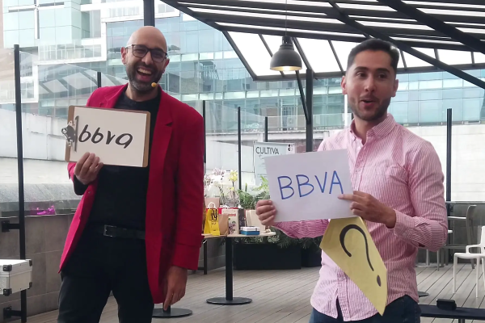
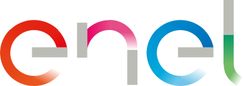

Capacitaciones y eventos corporativos de alto impacto en Bogotá
El aprendizaje experiencial en empresas es una metodología formativa donde los colaboradores adquieren conocimientos a través de la participación activa en una experiencia real y vivencial. A diferencia de las capacitaciones tradicionales, este enfoque mejora drásticamente la comprensión, eleva los niveles de recordación a largo plazo y facilita la aplicación inmediata del mensaje en el entorno laboral.
Lo hacemos mediante dinámicas participativas de magia y mentalismo aplicadas al contexto corporativo. Los trabajadores experimentan de primera mano situaciones que representan los retos, valores o metas de la empresa. Esto rompe la resistencia al cambio, activa el pensamiento crítico, genera una profunda reflexión colectiva y detona un cambio real de comportamiento.
Organizas comités, planeas lanzamientos y diseñas manuales, pero al final del día te enfrentas a la misma realidad en la oficina:
Talleres teóricos y monótonos que el equipo borra de su mente al salir de la sala de juntas.
Mensajes masivos por correo o carteleras que se ignoran y no transforman el día a día.
Diapositivas interminables que producen desconexión y fatiga en tus colaboradores.
Procesos nuevos que el equipo percibe como una imposición y no como una oportunidad.
👉 El problema no es tu contenido, es la forma en que se transmite. En un entorno lleno de distracciones, dictar teoría ya no es suficiente para conectar con las personas.
A través del ilusionismo aplicado a organizaciones, diseño intervenciones a la medida donde la magia no es el fin, sino el vehículo conductor. Cada efecto de magia y mentalismo está minuciosamente estructurado con un propósito corporativo claro: hacer visible una idea abstracta, provocar una emoción genuina y generar una comprensión profunda.
Logramos que tu equipo no sea un simple espectador pasivo, sino el protagonista de su propio proceso de aprendizaje.

Nos reunimos contigo para entender las necesidades de tu área en Bogotá. Identificamos el mensaje clave, el proceso o el hábito que tu empresa necesita reforzar o transmitir.
Traducimos los objetivos corporativos a metáforas mágicas. Construimos dinámicas personalizadas y momentos de impacto alineados perfectamente con la cultura de tu organización.
Llevamos a cabo la intervención. Tus colaboradores no se limitan a observar desde sus sillas; participan, interactúan, resuelven retos y experimentan el mensaje con todos sus sentidos.
Conectamos la emoción de la experiencia con la realidad laboral. Guiamos un espacio de análisis donde el equipo entiende el mensaje desde la práctica, fijando compromisos reales de acción.
Ideal para: Eventos masivos, lanzamientos de marca, convenciones anuales o cierres de año. Una puesta en escena de alto impacto que une el entretenimiento inteligente con los mensajes clave de la dirección.
Ideal para: Sorprender al equipo en su día a día sin interrumpir la jornada laboral. Microexperiencias de alto impacto directo en los escritorios que rompen la rutina y siembran mensajes específicos.
Ideal para: Campañas de gestión del cambio, semanas de la salud, cultura organizacional, SGI o seguridad de la información. Dinámicas itinerantes para movilizar a toda la compañía en torno a un nuevo hábito.
Ideal para: Talleres de team building, liderazgo, servicio al cliente y comunicación asertiva. Sesiones profundas de capacitación donde el juego y la magia aceleran el aprendizaje organizacional.

El reto: Motivar a los colaboradores a usar una nueva herramienta de autoformación.
La solución: Diseñamos una analogía mágica donde el conocimiento expandía las posibilidades del equipo, generando una conexión emocional inmediata con el valor del aprendizaje continuo.
El reto: Concientizar sobre el gasto innecesario de recursos físicos en las oficinas.
La solución: A través de efectos de desaparición y transformación de materiales, logramos que los equipos cuestionaran sus hábitos cotidianos y asumieran un compromiso ecológico real.
El reto: Cambiar comportamientos arraigados frente al uso de elementos de un solo uso.
La solución: Intervenciones lúdicas que evidenciaron el impacto acumulativo de las decisiones individuales, promoviendo alternativas conscientes en el entorno de trabajo.
El reto: Advertir sobre los riesgos de la ingeniería social y el descuido de contraseñas.
La solución: Mediante demostraciones de mentalismo y lectura de pensamiento, evidenciamos de forma impactante cómo pequeñas vulnerabilidades y acciones cotidianas pueden abrir grandes brechas de seguridad.
Invertir en actividades para empresas debe traducirse en resultados. Con nuestra metodología aseguras:
El cerebro recuerda lo que le emociona. Al asociar tus metas con el asombro, el mensaje permanece activo por meses.
Adiós a la resistencia. El formato interactivo involucra de forma natural tanto a perfiles tímidos como a líderes de área.
La magia humaniza los datos duros, logrando que el colaborador se ponga la camiseta por convicción y no por obligación.
Simplificamos procesos técnicos, normativos o financieros difíciles con analogías visuales y herramientas listas para ejecutar al día siguiente.
Nuestras intervenciones no son improvisadas. Combinamos estratégicamente el rigor del aprendizaje experiencial corporativo con principios validados de la educación participativa y las neurociencias aplicadas a la comunicación estratégica.
El resultado es un ecosistema pedagógico diseñado con precisión, capaz de generar transformaciones culturales medibles y cambios de comportamiento reales, superando los resultados de los eventos corporativos tradicionales que solo buscan entretener.
Esto no es un show de magia adaptado a la carrera. Es una solución de consultoría y formación construida minuciosamente desde y para tu mensaje corporativo. No buscamos que tu equipo se pregunte "¿cómo lo hizo?", sino "¿cómo aplicamos esto en nuestros objetivos?". Cada intervención responde a un indicador de tu organización; aquí, cada instante tiene una clara intención educativa.
“ Teníamos el reto de transmitir un cambio de procesos muy complejo y temíamos la resistencia del equipo. Logramos que entendieran y adoptaran el mensaje de una forma completamente distinta. No solo asistieron a una capacitación: la vivieron, se rieron y la interiorizaron. Los resultados en la operación se notaron desde la primera semana. ”
— Gerente de Formación y Desarrollo / Gran Empresa en Bogotá
No dejes que tus mensajes estratégicos se queden en el olvido. Convierte tu próxima capacitación, campaña o convención en una experiencia de aprendizaje que tu equipo realmente apropie.